Latest videos
30 videos · page 1/3
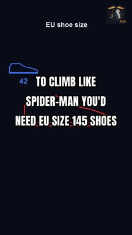
Could a Human Really Stick to Walls Like Spider-Man?
To be Spider-Man, you'd need EU size 145 shoes.
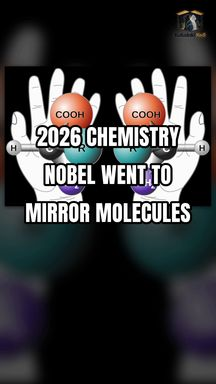
Molecules Have Left and Right Hands Too
Like our hands, many molecules come in left and right versions. But the proteins in our cells almost always use just one.
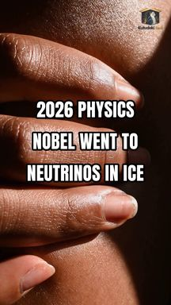
65 Billion Neutrinos Pass Through Your Fingernail Every Second
Right now, about 65 billion neutrinos are passing through your fingernail every second. And you can't feel a single one.
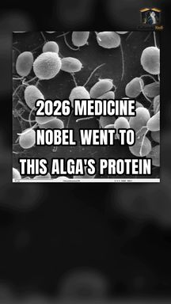
An Algae Protein Opened the Way to Controlling Brain Cells With Light
The protein that lets a single-celled alga swim toward light is now used to switch nerve cells on and off with light.
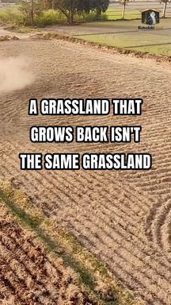
A Grassland That Grows Back Isn't the Same Grassland
Plough a grassland and leave it for years, and it can turn green again. But that doesn't mean the old ecosystem has returned.
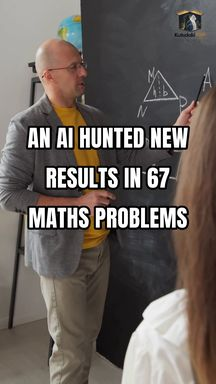
An AI Searched for New Results in 67 Maths Problems
Nobody tells this AI 'solve the problem'. They tell it 'write a program that can find the solution'.
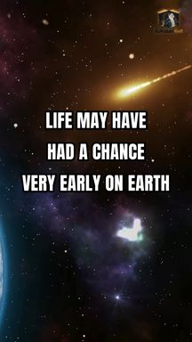
Could Life Have Started Very Soon After Earth Formed?
Earth's first few hundred million years looked terrible for life. Giant impacts, a molten crust, and oceans boiling away.
This AI Beat the Most Decorated Stratego Player
In chess, you can see every piece. In Stratego, you don't know what any of your opponent's 40 pieces are.
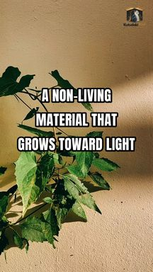
Can a Non-Living Material Grow Toward Light?
Plants growing toward light is called phototropism. Now researchers have shown the same behaviour can appear in a material that isn't alive.
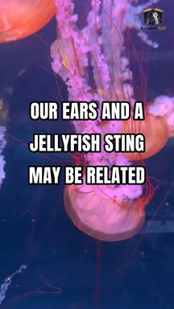
Our Hearing Cells May Be Related to a Jellyfish's Sting
The cells that let you hear may have an unexpected relative: the cells a jellyfish uses to fire its venomous sting.
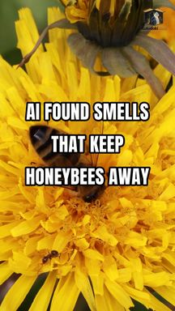
AI Found Smells That Keep Honeybees Away From Fields
One way to protect bees from pesticides may not be a safer pesticide. It may be keeping bees from landing there at all.
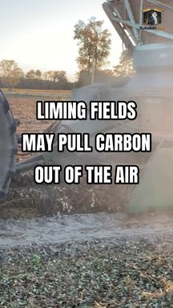
Could Liming Fields Pull Carbon Out of the Air?
Climate accounts usually count farm lime as a source of carbon dioxide. But a century of data from the Mississippi basin suggests the opposite may happen in the long run.
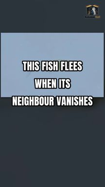
This Fish Flees When Its Neighbour Suddenly Vanishes
This tiny fish doesn't need to see the predator. If the fish beside it suddenly disappears, it flees as if danger were near.
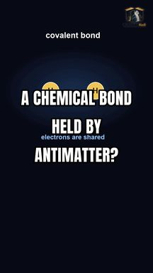
Can Positrons, Not Electrons, Hold a Chemical Bond?
In chemistry, a covalent bond means atoms sharing electrons. But in this calculation, the particles holding two atoms together aren't electrons. They're positrons, the electron's antimatter twin.
What Does Your Voice Say About Your Biological Age?
An AI can guess your age just by listening to you speak. And when it thinks you sound older than you are, that gap tracks with signs of biological ageing.
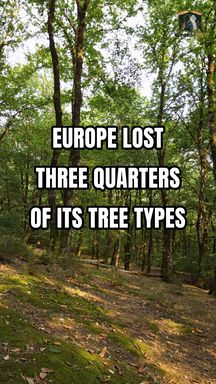
Europe Lost Three Quarters of Its Tree Types
Europe's forests today may be just a shadow of what once grew there.
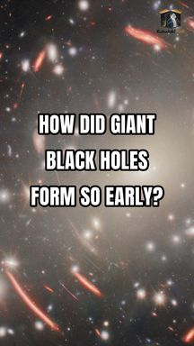
How Did Giant Black Holes Form So Early?
James Webb keeps finding little red dots in the early universe. And inside some of them are black holes far too heavy for their galaxies.
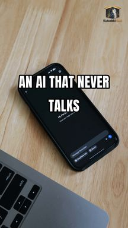
One of ChatGPT's Makers Built an AI That Never Talks
One of the people behind ChatGPT didn't like what they'd built.
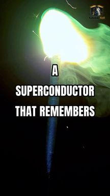
A Superconductor That Remembers
Switch off the current in this superconductor suddenly, and it remembers. For hours. Turn it down slowly, and the memory is wiped.
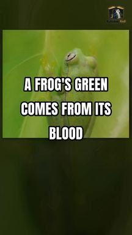
A Frog's Green Comes From Its Blood
The green of some tree frogs doesn't come from a green pigment in their skin.
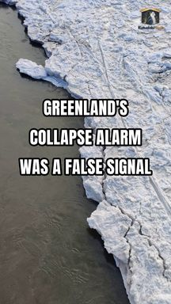
Greenland's Collapse Alarm Was a False Signal
A warning sign that Greenland's ice sheet was heading for collapse may have been a false alarm.
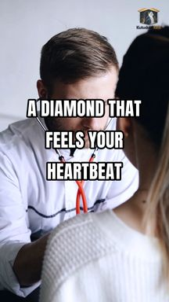
A Diamond That Feels Your Heartbeat
Your heart has a magnetic field. And a diamond can feel it.
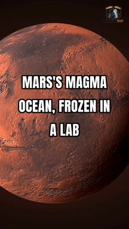
Mars's Magma Ocean, Frozen in a Lab
Mars was once covered by an ocean of molten rock. Researchers recreated how that ocean froze, step by step, in the lab. And the minerals suggest a light first crust, more than thirty kilometres thick, could have formed on top.
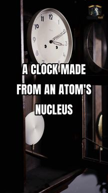
A Clock Made From an Atom's Nucleus
The best clocks today keep time by counting electrons jumping inside atoms. But physicists dream of something steadier. A clock built on the atom's nucleus.
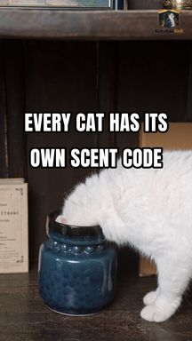
Every Cat Has Its Own Scent Code
When a cat sniffs another cat's pee, it's not just smelling cat. Researchers found thirteen fatty acids in cat urine, mixed in different proportions for every cat.